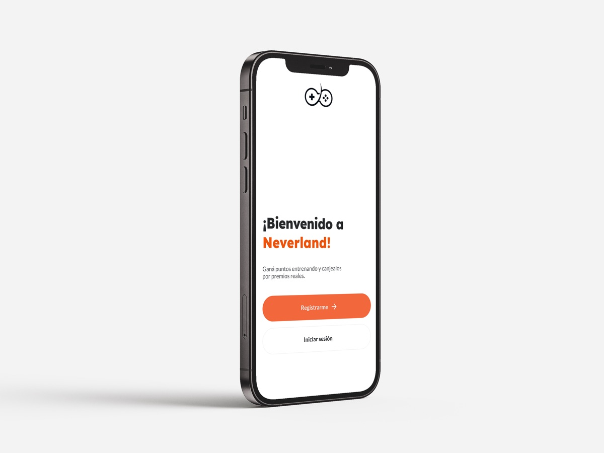
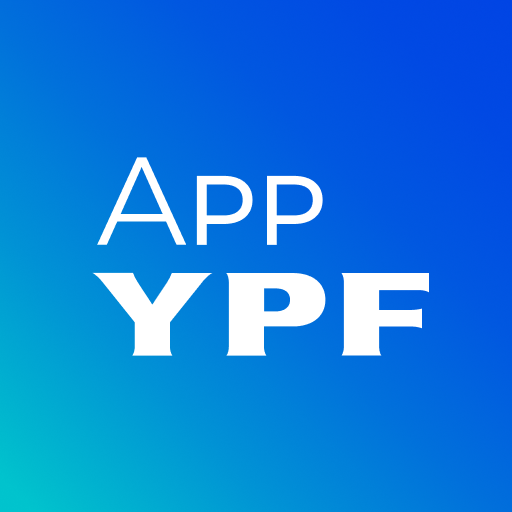
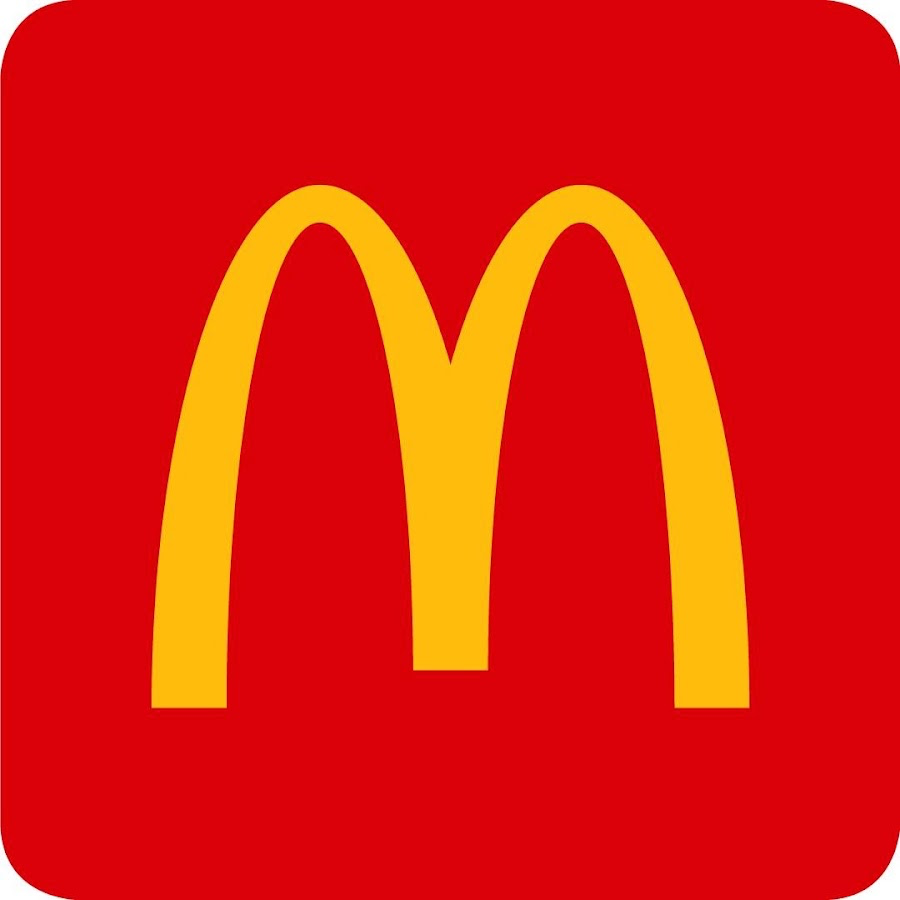
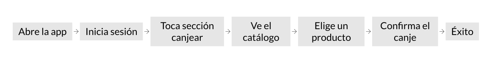
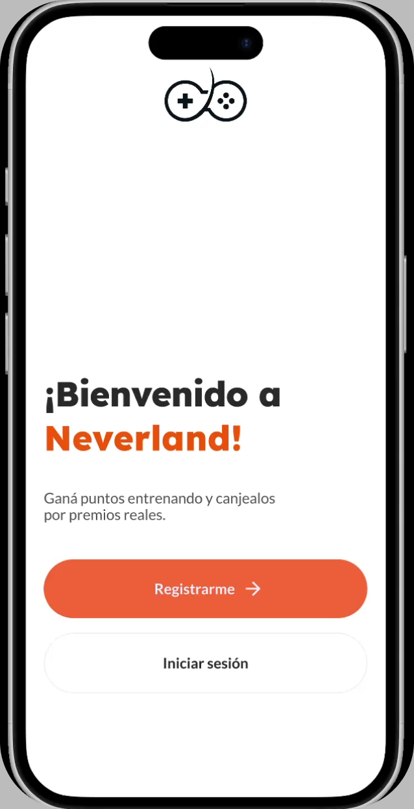
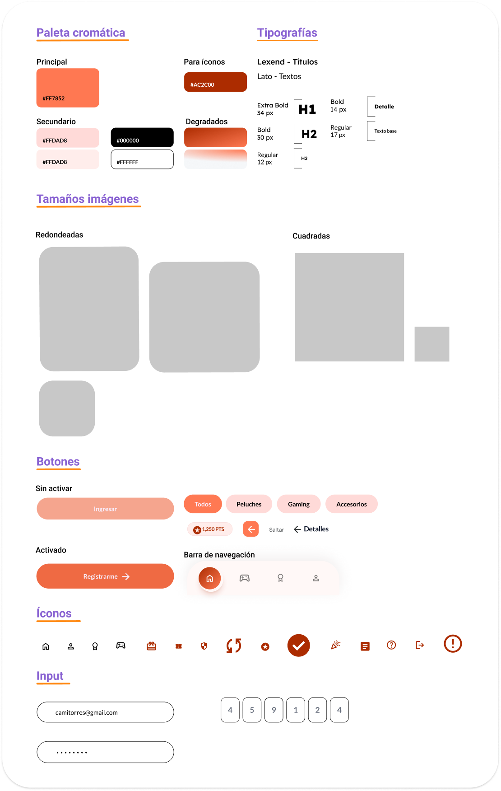

2026
Neverland
Rediseño de app
Este proyecto consistió en el análisis y rediseño de una aplicación para Neverland. A partir de un análisis de usabilidad, se identificaron oportunidades de mejora y se optimizó la interfaz y la navegación para ofrecer una experiencia más intuitiva, clara y accesible.
Comparativa y análisis de aplicaciones similares, se analizaron 3 aplicaciones.
-

App YPF
Es una plataforma digital que permite a los usuarios gestionar pagos, acceder a beneficios y participar del programa de fidelización ServiClub.
-

McDonald's
Permite realizar pedidos desde el celular, acceder a promociones y participar en el programa de fidelización MyMcDonald’s Rewards.
-
Santander - SuperClub
Es el programa de beneficios y puntos del Banco Santander, accesible desde la app oficial del banco. Los usuarios acumulan puntos automáticamente a través del consumo con sus tarjetas.
Conclusiones
El análisis de App YPF, McDonald's y Santander SuperClub permite identificar algunos patrones comunes en las aplicaciones que canjean puntos.
El saldo está siempre visible y con jerarquía clara
A partir del análisis comparativo entre YPF ServiClub, McDonald's y Santander SuperClub, se puede observar que las tres aplicaciones comparten una serie de patrones consolidados en el mercado para los sistemas de acumulación y canje de puntos.
Los ítems inaccesibles por saldo insuficiente se bloquean visualmente antes de que el usuario intente interactuar con ellos y el historial de movimientos es accesible en cualquier momento desde la navegación principal. Estos elementos funcionan como estándares implícitos que el usuario ya conoce y espera encontrar en cualquier app de este tipo.
Análisis heurístico del flujo principal. Las pantallas analizadas incluyen la pantalla de inicio y todo el flujo de navegación asociado a estas pantallas.
Análisis heurístico
#1 Visibilidad del estado del sistema
Se identificó que el saldo de puntos tenía baja jerarquía visual y que el título "Canjeá tus puntos" generaba una expectativa incorrecta sobre la operación. En el rediseño, el saldo aparece destacado en el header global y cada pantalla comunica claramente el estado de la acción en curso.
#2 Correspondencia entre el sistema y el mundo real.
El título original describía la acción opuesta a lo que realmente ocurría en la pantalla. En el rediseño se utilizan términos familiares y precisos que reflejan exactamente lo que el usuario está haciendo.
#3 Control y libertad del usuario
Se detectó que el botón para cerrar la ventana emergente era demasiado pequeño y que no existía forma de deshacer una acción una vez ejecutada. En el rediseño se amplió el área táctil de los controles y se incorporó una pantalla de confirmación previa al canje.
#4 Consistencia y estándares
Los botones "Historial" y "Volver" tenían el mismo tratamiento visual, sugiriendo que realizaban acciones de igual importancia. En el rediseño se diferencia el botón primario (relleno naranja) del secundario (solo borde), estableciendo una jerarquía visual clara.
#5 Prevención de errores
Todos los ítems del catálogo se veían igual independientemente del saldo disponible, lo que permitía que el usuario llegara hasta la ventana de confirmación para recién enterarse de que no podía completar el canje. En el rediseño los ítems inaccesibles aparecen bloqueados visualmente desde el catálogo.
#6 Reconocimiento antes que recuerdo
El título incorrecto de la pantalla y la ausencia del saldo global obligaban al usuario a razonar sobre qué estaba haciendo y recordar cuántos puntos tenía. En el rediseño la información clave está siempre visible y cada pantalla se explica por sí misma sin exigir memoria al usuario.
#7 Flexibilidad y eficiencia de uso
El historial solo era accesible desde la pantalla de éxito post-acreditación, obligando al usuario a completar una acción para poder consultar sus movimientos. En el rediseño el historial tiene acceso directo desde la barra de navegación inferior, disponible en cualquier momento.
#8 Estética y diseño minimalista
Las pantallas de la interfaz original presentaban una jerarquía visual ordenada con íconos y nombres de actividad, lo cual se mantuvo como punto de partida positivo. En el rediseño se reforzó esta claridad eliminando información redundante y priorizando los datos más relevantes para el usuario.
#9 Ayuda a reconocer y recuperarse de errores
El mensaje de error original era específico y comprensible, lo que se tomó como una fortaleza a mantener. En el rediseño se amplió este criterio a todos los estados de error de la app.
#10 Ayuda y documentación
No existía ningún texto de ayuda que explicara al usuario cómo funciona el sistema de puntos, cuánto valen o dónde se pueden usar. En el rediseño se incorporó un onboarding de 3 slides que introduce el sistema al usuario la primera vez que ingresa, reduciendo la curva de aprendizaje desde el inicio.
Se definió el flujo de navegación para organizar el recorrido del usuario dentro de la interfaz, estableciendo la secuencia de acciones y la relación entre las diferentes pantallas o secciones con el fin de garantizar una experiencia clara y coherente.
Task flow
Los pasos mínimos que hace el usuario para completar cada tarea.

User flow
Todas las decisiones y caminos posibles dentro de la app.

Wireflow
Las pantallas en orden, con el elemento que se toca en cada paso.

Prototipo final de la interfaz en contexto.
Link al prototipo
El UI Kit define los elementos visuales y de interacción de la app para mantener claridad y consistencia en la experiencia. Incluye paleta cromática, tipografías, tamaños de imágenes, botones, barra de navegación, íconos e inputs.
